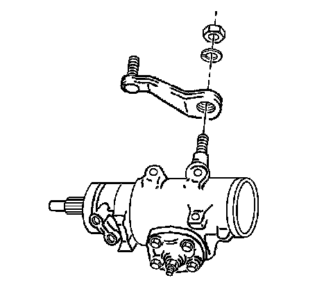
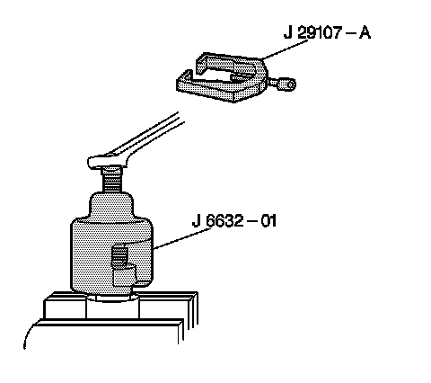

Pitman Arm: Service and Repair
Pitman Arm Replacement
Tools Required
^ J 6632-01 Pitman Arm Puller
^ J 29107-A Pitman Arm Puller
Removal Procedure

1. Raise and suitable support the vehicle. Refer to Lifting and Jacking the Vehicle.
2. Remove the power steering gear.
3. Install the power steering gear into a vise.
4. Remove the pitman arm nut and washer.

5. Remove the pitman arm from the pitman shaft using J 6632-01 or J 29107-A.
Installation Procedure
1. Install the pitman arm to the power steering gear.
Notice: Refer to Fastener Notice.
2. Install a new pitman arm washer and nut.
Tighten the nut to 250 N.m (184 lb ft).
3. Remove the power steering gear from the vise.
4. Install the power steering gear.
5. Lower the vehicle.
6. Check the wheel alignment. Refer to Measuring Wheel Alignment.